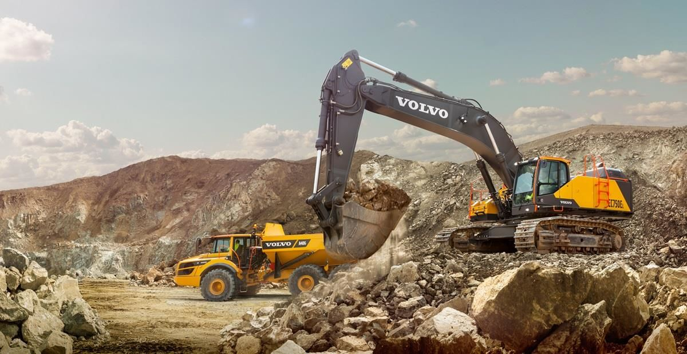

Causes:Mining Operations

Mining is a process wherein minerals below the earth are extracted using large equipments. During the process dust and chemicals are released in the air causing large amount of air pollution. This is one of the reason that damaged workers and nearby residents health.
Mining provides iron and copper for making aeroplanes, refrigerators. Mines also supply salt for food, gold, silver and diamonds for jewellery; and coal for fuel. We mine uranium for nuclear energy, stone for buildings, phosphate for fertilizers and gravel for roads.